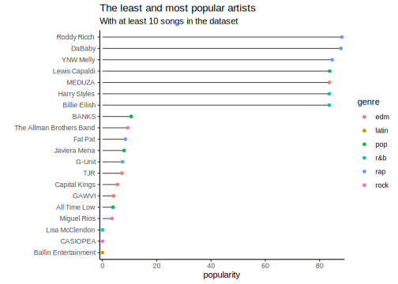
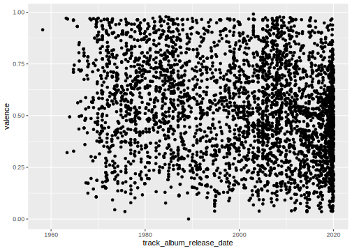

Day 6 Examples and Feedback
6.1 Random Sidenotes
This is a loose collection of data and concepts we explored.
library(tidyverse)## ── Attaching packages ────────## ✓ ggplot2 3.3.2 ✓ purrr 0.3.4
## ✓ tibble 3.0.3 ✓ dplyr 1.0.1
## ✓ tidyr 1.1.1 ✓ stringr 1.4.0
## ✓ readr 1.3.1 ✓ forcats 0.5.0## ── Conflicts ─────────────────
## x dplyr::filter() masks stats::filter()
## x dplyr::lag() masks stats::lag()plt <- mpg %>%
ggplot(aes(displ, cty)) +
geom_point()
ggsave(filename = "myPlot.png", plot = plt)ggsaveuses width and height of the current graphics device by default and messages them in the console- Many files, many folders? Use
map!
paths <- dir("data", full.names = TRUE, pattern = ".csv")
paths <- set_names(paths, basename(paths))
allDatasets <- map(paths, read_csv)
createDataset <- function(i) {
tibble(
x = rnorm(100),
y = rnorm(100)
)
}
aBunchOfDatasets <- map(1:10, createDataset)
names(aBunchOfDatasets) <- paste0("myData/dataset ", 1:10, ".csv")
walk2(aBunchOfDatasets, names(aBunchOfDatasets), ~ write_csv(.x, path = .y) )paths <- dir("myData", pattern = ".csv", full.names = TRUE) %>%
set_names(basename(.))
allDatasets <- map_dfr(paths, read_csv, .id = "dataset")
allDatasets %>%
ggplot(aes(x, y)) +
geom_point() +
facet_wrap(~ dataset)6.2 Lot’s of Examples
6.2.1 Tidytuesday: Spotify
rawData <- readr::read_csv('https://raw.githubusercontent.com/rfordatascience/tidytuesday/master/data/2020/2020-01-21/spotify_songs.csv')## Parsed with column specification:
## cols(
## .default = col_double(),
## track_id = col_character(),
## track_name = col_character(),
## track_artist = col_character(),
## track_album_id = col_character(),
## track_album_name = col_character(),
## track_album_release_date = col_character(),
## playlist_name = col_character(),
## playlist_id = col_character(),
## playlist_genre = col_character(),
## playlist_subgenre = col_character()
## )## See spec(...) for full column specifications.spotifySongs <- rawData %>%
mutate(track_album_release_date = lubridate::ymd(track_album_release_date))## Warning: Problem with `mutate()` input `track_album_release_date`.
## x 1886 failed to parse.
## ℹ Input `track_album_release_date` is `lubridate::ymd(track_album_release_date)`.## Warning: 1886 failed to parse.Popularity with One-Hit-Wonders removed. You need to have at least 10 songs to be in my list.
spotifySongs %>%
group_by(track_artist) %>%
filter(n() > 10) %>%
summarise(popularity = mean(track_popularity)) %>%
arrange(desc(popularity)) %>%
head()## `summarise()` ungrouping output (override with `.groups` argument)## # A tibble: 6 x 2
## track_artist popularity
## <chr> <dbl>
## 1 Roddy Ricch 88.2
## 2 DaBaby 87.9
## 3 YNW Melly 84.6
## 4 Lewis Capaldi 83.7
## 5 MEDUZA 83.6
## 6 Harry Styles 83.6getMainGenre <- function(x) {
names( table(x)[which.max(table(x))] )
}byArtist <- spotifySongs %>%
group_by(track_artist) %>%
filter(n() > 10) %>%
summarise(popularity = mean(track_popularity),
genre = getMainGenre(playlist_genre)) %>%
top_n(n = 20, wt = abs(mean(popularity) - popularity)) %>%
mutate(track_artist = fct_reorder(track_artist, popularity))## `summarise()` ungrouping output (override with `.groups` argument)byArtist %>%
ggplot(aes(x = track_artist, y = popularity,
color = genre)) +
geom_linerange(aes(ymax = popularity), ymin = 0, color = "grey30") +
geom_point() +
coord_flip() +
scale_y_continuous(expand = c(0,1)) +
theme_classic() +
labs(x = "",
title = "The least and most popular artists",
subtitle = "With at least 10 songs in the dataset")
spotifySongs %>%
filter(playlist_genre == "rock") %>%
ggplot(aes(track_album_release_date, valence)) +
geom_point()## Warning: Removed 804 rows containing missing values (geom_point).
6.2.2 Shiny App
Create a file called app.R, copy and paste,
hit run app in the top right corner.
library(shiny)
library(tidyverse)
rawData <- readr::read_csv('https://raw.githubusercontent.com/rfordatascience/tidytuesday/master/data/2020/2020-01-21/spotify_songs.csv')
spotifySongs <- rawData %>%
mutate(track_album_release_date = lubridate::ymd(track_album_release_date))
ui <- fluidPage(
titlePanel("Old Faithful Geyser Data"),
sidebarLayout(
sidebarPanel(
selectInput("genre",
"Select a Genre",
choices = unique(spotifySongs$playlist_genre)),
selectInput("variable",
"Select a Genre",
choices = c("valence", "loudness",
"speechiness",
"liveness",
"energy"))
),
mainPanel(
plotOutput("plot")
)
)
)
server <- function(input, output) {
output$plot <- renderPlot({
spotifySongs %>%
filter(playlist_genre == input$genre) %>%
ggplot(aes(track_album_release_date, !!sym(input$variable) )) +
geom_point()
})
}
# Run the application
shinyApp(ui = ui, server = server)